DES算法
完成DES算法的目的，有一部分在于熟悉DES算法与Fesitel结构，了解古典密码思想在现代密码中的应用（DES是它们很不错的体现）。此外也有了解加解密流程，并尝试算法优化的目的在里面。
软件环境：gcc version 6.4.0 (x86_64-posix-seh-rev0, Built by MinGW-W64 project)
一、DES算法
输入输出
输入共包含四行。
- 第 1 行一个正整数 T，代表需要加密 / 解密的次数，使用的密钥相同；
- 第 2 行一个十六进制串 s，以
0x开头，代表明文，保证 $|s| = 18$； - 第 3 行一个十六进制串 k，以
0x开头，代表密钥，保证 $|k| = 18$； - 第 4 行一个非负整数 op， 代表加密 / 解密模式，1 代表加密，0 代表解密。
输出格式：输出为一行以 0x 开头的字符串，代表加密 / 解密结果。
// 样例输入
39
0x3fc8d0410de97f5e
0xee7bfa825f654293
0
// 样例输出
0xad0ea0c458594e1e
算法原理
DES（数据加密标准）为一种对称加密算法，利用56比特串长度的密钥K来加密长度为64位的明文，得到长度为64位的密文。它的解密与加密的步骤和密钥一致，故而便于硬件实现。
加解密
加密算法的实现分为三个阶段：
- 给定明文X，通过一个固定的初始置换IP来排列X中的位，得到$X_0=IP(X)=L_0R_0$
- 计算函数F的16次迭代，根据规则计算$L_iR_i(1\le i\le16)$：$L_i=R_{i-1},\ R_i=L_{i-1}\oplus F(R_{i-1},k_i)$，其中$k_i$是56位密钥K生成的48位子密钥。
- 对比特串$R_{16}L_{16}$使用逆置换$IP^{-1}$得到密文$Y=IP^{-1}(R_{16}L_{16})$
其关键点在于第二个步骤，也就是16次迭代：一次迭代包含一次置换和一个代替，处理一半的位数。代替部分的关键点在于F函数，其中非线性的S盒起到混淆的效果，线性的P盒起到置换的效果。最后，为了保证加密和解密的硬件实现一致，加密算法的最后删去了第16轮的置换。
解密时倒序使用所有子密钥即可。
密钥生成
密钥生成算法使用一个64位（包含8位奇偶校验位）的原始密钥来生成16个48位的子密钥。生成时，先经过一次初始置换PC-1，然后被分成两半分别独立进行循环左移，输出时再进行第二次映射PC-2。
算法流程
函数调用图
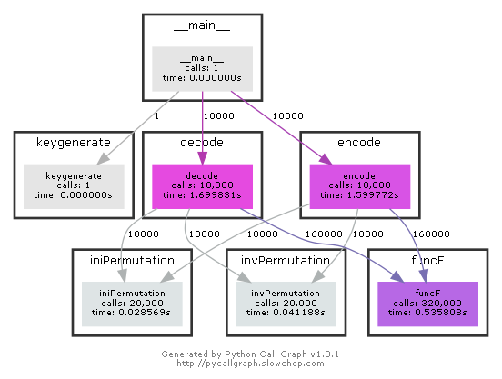
函数总流程图
整个的DES算法可看作相对独立的两大部分：密钥生成和加解密。
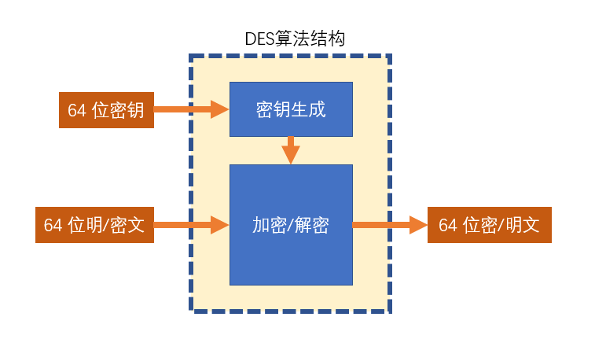
加密/解密
加解密的整个流程可分为三个主要层次：加解密、论迭代、F函数、我将其中一部分单独封装为函数，其调用关系在这一部分的最开始给出。
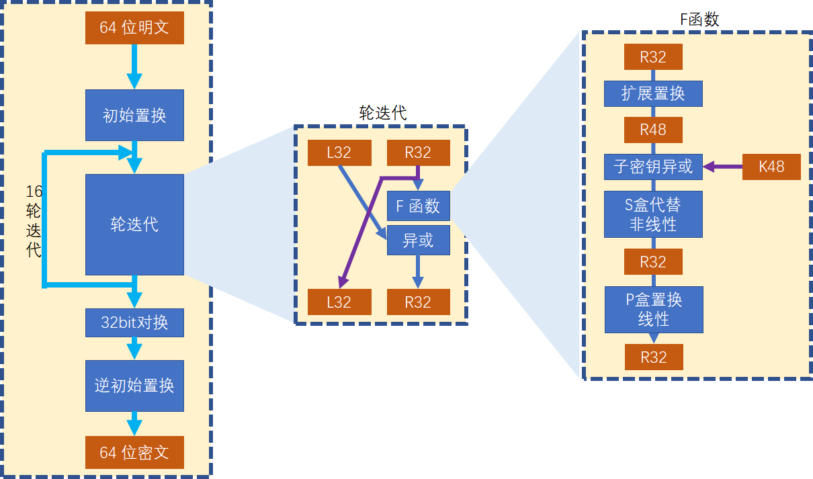
伪代码如下：
Function encode(plain, key[16]):
plain ← IP(plain)
[L, R] ← plain
for i in range(16):
L' ← R
R' ← F(R, K) ^ L
ans ← invIP([R, L])
return ans
Function F(word, key):
word ← ext_to_48(word)
word ← word ^ key
word ← S(word)
word ← P(word)
return word
密钥生成
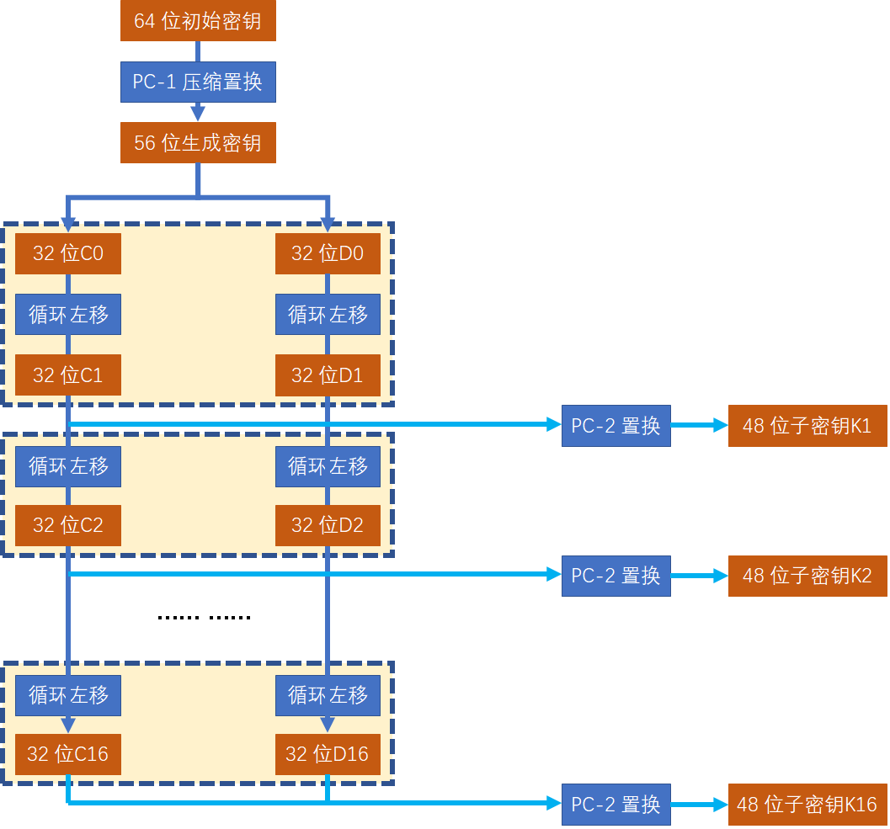
伪代码如下：
Function keygenerate(key):
key ← PC_1(key)
[C, D] ← key
for i in range(16):
[C, D] ← leftshift([C, D])
subkey[i] ← PC_2([C, D])
return subkey
测试
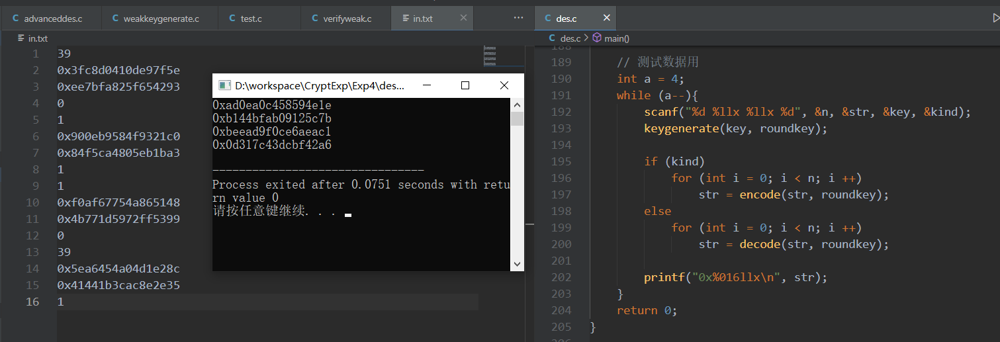
总结与思考
我在实现DES时采用了位运算而非01字符串操作的方法，这样实现更快，但是代码可读性较差，于是添加了相当的注释。鉴于DES较为显著的模块化特征，我也格外注意了函数的封装和参数传递，但由于仍旧采用面向过程的编程方式，各个变量之间的关系体现得并不明显，可以采取更进一步的优化。
二、三重DES算法
DES并非一个群（指两次复合加密运算并不能被一次加密运算所代替），这使得二重、三重DES是有意义的。此外，三重DES虽然有一定价值，使其穷举攻击的安全性有所改进，但并没有3倍密钥量那么坚强。
输入输出
三重DES(DES-EDE2)算法使用两个秘钥 $k_1$ 和 $k_2$，加密规则为 $c = Enc_{k_1}(Dec_{k_2}(Enc_{k_1}(m)))$
输入共包含四行。
- 第 1 行一个十六进制串 $s$，以
0x开头，代表明文，保证 $|s| = 18$； - 第 2 行一个十六进制串 $k_1$，以
0x开头，代表密钥，保证 $|k_1| = 18$； - 第 3 行一个十六进制串 $k_2$，以
0x开头，代表密钥，保证 $|k_2| = 18$； - 第 4 行一个非负整数 $op$， 代表加密 / 解密模式，1 代表加密，0 代表解密。
输出格式：输出为一行以 0x 开头的字符串，代表加密 / 解密结果。
// 样例输入
0x78e2025d31d06fde
0xa530af81d46635e4
0xfc6aa9db1d2b1224
1
// 样例输出
0xf1b98dac6657545c
算法原理
3DES加解密的原理如下，密钥长度为$64\times 3=192$。
$$
C=E_{k3}(D_{k2}(E_{k1}(P)))\
P=D_{k1}(E_{K2}(D_{k3}(C)))
$$
有时令$K_1=K_3$，此时密钥长度为$64\times 2=128$。
算法流程
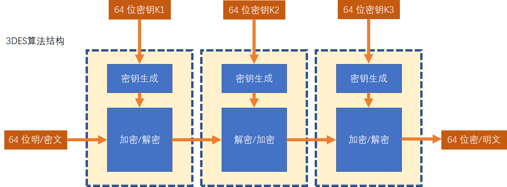
测试
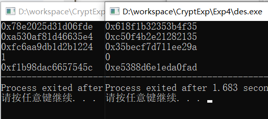
总结与思考
随着计算机运算能力增强，DES密码变得容易被暴力破解；3DES即通过每个数据块应用三次DES加密，来提供一种相对简单的方法（增加DES的密钥长度，至原来的2到3倍）来提高DES算法的安全性，避免类似的攻击。
三、弱密钥与半弱密钥
这一部分编程实现了弱密钥与半弱密钥的查找——遍历是不现实的，用了循环节的原理直接生成。弱密钥和半弱密钥是不安全的密钥——使用弱密钥二次加密会得到明文；而半弱密钥总是成对出现——使用一对中的两个密钥分别加密会恢复明文。当然它们也可以通过生成的子密钥的形态来定义，如下：
- 弱密钥：若给定初始密钥 $K$，经密钥生成，有 $K_1 = K_2 = …… = K_{16}$，则称 $K$ 为弱密钥；
- 半弱密钥：若给定初始密钥 $K_0$ 和 $K_1$，两个密钥生成的子密钥对称，则称 为 $K_0$ 和 $K_1$一组半弱密钥；
思路
这一部分我分为三个方面介绍，前一部分的理论性较强，故而放在算法原理里阐明，后两部分主要放在算法流程里阐述。
- 生成密钥
- 逆PC-1置换
- 原密钥生成算法（补奇偶校验）
明确密钥生成算法各个阶段的名称如下，黄色虚线框内为本题讨论内容：
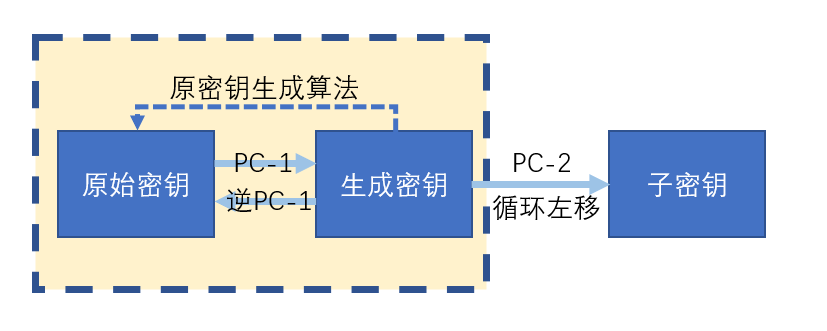
算法原理
生成密钥
密钥生成时，先经过一次初始置换PC-1，然后被分成两半分别独立进行循环左移，输出时再进行第二次映射PC-2（并不影响密钥的本质）。正如“生成空间”的概念一样，一个生成密钥生成一组子密钥，同样一个生成密钥可确定两个原密钥（奇偶校验位不同）。找到这个生成密钥即可找到所有的弱密钥、半弱密钥。
对于弱密钥(weak)而言，它所有的子密钥全都相同。要保证每次生成的密钥是相同的，则确保PC-1过后分成的两半，在循环左移中不改变即可——这也就意味着密钥的循环节长度为1。这在{0， 1}串中即意味着：当且仅当半密钥全是1，全是0，或者一半全是1、另一半全是0时，才会发生这种情况：
0x00000000000000,
0x0000000FFFFFFF,
0xFFFFFFF0000000,
0xFFFFFFFFFFFFFF,
对于半弱密钥(semi-weak)而言，它生成的子密钥重复周期为2，也就是说它只生成两种不同的子密钥，每个被使用8次。要使生成的子密钥只有两种，密钥应为01交错的样式，或至少一半是这样，另一半始终保持不变——可以用循环节长度为2的方法证明。与一个半弱密钥对称的半弱密钥，是01循环节交换0与1位置的密钥。故而半弱密钥的所有生成密钥如下：
0x00000005555555, 0x0000000AAAAAAA,
0xFFFFFFF5555555, 0xFFFFFFFAAAAAAA,
0x55555555555555, 0xAAAAAAAAAAAAAA,
0x55555550000000, 0xAAAAAAA0000000,
0X5555555FFFFFFF, 0XAAAAAAAFFFFFFF,
0xAAAAAAA5555555, 0x5555555AAAAAAA,
逆PC-1置换
PC-1置换是一个不可逆的压缩置换，但是既然去除掉的都是不包含重要信息的奇偶校验位，称之为置换也算合理。在找到生成密钥后，需要求得逆PC-1置换才可以找到原始密钥。对于非奇偶校验的位，映射前后是一一对应的，故而可以简单地求得这一部分的逆。
$$
PC1:\ 2^{64}\longrightarrow 2^{56}
$$
算法流程
函数调用图
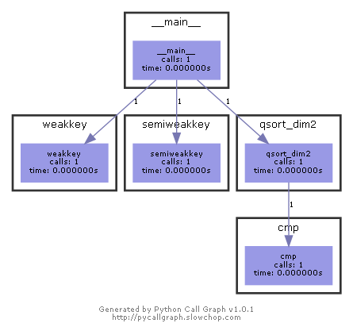
流程图
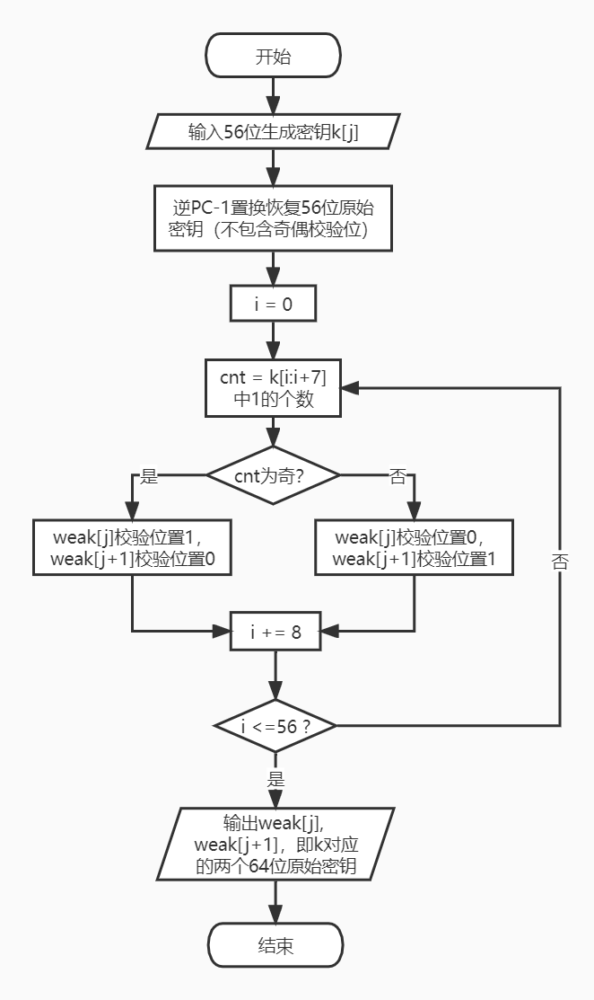逆PC-1置换
对于原始的PC-1置换表而言，它实际上是一个位置到值的映射，逆映射即将位置和值的关系倒过来即可，可以用一个二维排序来解决，第一维为映射后的位置信息，第二位为映射前的位置信息（看作值）：
// 逆置换表生成
int cmp(const void *a, const void *b){return *(int*)(a+1)-*(int*)(b+1);}
void qsort_dim2(int a[][2], int n){
int i;
for (i = 0; i < n; i ++)
a[i][0] = i + 1;
for (i = 0; i < n; i ++)
a[i][1] = Ksub[i];
qsort(a, n, sizeof(a[0]), cmp);
for (i = 0; i < n; i ++)
Kinv[i] = a[i][0];
}
// 生成密钥通过逆映射恢复原始密钥（不包含奇偶校验位）
// 这一部分包含在生成算法里，没有单独打包成函数
for (int i = 0; i < 56; i ++){
tmp <<= 1;
tmp |= (iniw[j] >> (56 - Kinv[i])) & 1;
}
奇偶校验
在不确定是奇校验还是偶校验的情况下，一个生成密钥确定了两个原始密钥。原始密钥有 64 位，其中每 8 位中有一个奇偶校验位。因此从生成密钥恢复到原始密钥的过程，实际上就是添加奇偶校验位的过程。
- 奇校验：在前 7 位中 1 的个数为偶数个时，校验位置 1 ，使得 1 的总数为奇数个
- 偶校验：在前 7 位中 1 的个数为奇数个时，校验位置 1 ，使得 1 的总数为偶数个
具体的算法实现：对 64 位的密钥，我分为 8 轮校验，每次恢复一位奇偶校验位。因为C语言好像没有缩减运算符所以写起来比较麻烦，否则可以直接使用^group来表示group这个变量的二进制表示中有多少个 1。
for (int k = 7; k >= 0; k --){ // 分为8组
group = (tmp >> (7*k)) & ((1 << 7) - 1);
weak[2*j] |= (group<<1); // 奇校验的原始密钥
weak[2*j + 1] |= (group<<1); // 偶校验的原始密钥
int num = 0;
for (int i = 0; i < 7; i++){ // 数一下每8位有几个1
if (((group >> i) & 1) == 1)
num ++;
}
if (num % 2 == 0) // 奇校验成功
weak[2*j] |= 1;
else // 偶校验成功
weak[2*j+1] |= 1;
if (k != 0){
weak[2*j] <<= 8;
weak[2*j+1] <<= 8;
}
}
测试数据
没有特殊的测试数据，这里先贴上运算结果，也就是弱密钥和半弱密钥，可以看到看起来还是很有规律的：
// 弱密钥
0x0101010101010101
0x0000000000000000
0xe0e0e0e0f1f1f1f1
0xe1e1e1e1f0f0f0f0
0x1f1f1f1f0e0e0e0e
0x1e1e1e1e0f0f0f0f
0xfefefefefefefefe
0xffffffffffffffff
// 半弱密钥
0x1f011f010e010e01 0x011f011f010e010e
0x1e001e000f000f00 0x001e001e000f000f
0xfee0fee0fef1fef1 0xe0fee0fef1fef1fe
0xffe1ffe1fff0fff0 0xe1ffe1fff0fff0ff
0xfe01fe01fe01fe01 0x01fe01fe01fe01fe
0xff00ff00ff00ff00 0x00ff00ff00ff00ff
0xe001e001f101f101 0x01e001e001f101f1
0xe100e100f000f000 0x00e100e100f000f0
0xfe1ffe1ffe0efe0e 0x1ffe1ffe0efe0efe
0xff1eff1eff0fff0f 0x1eff1eff0fff0fff
0x1fe01fe00ef10ef1 0xe01fe01ff10ef10e
0x1ee11ee10ff00ff0 0xe11ee11ef00ff00f
对于弱密钥正确性的验证：（以一次输入为例，经过两次加密）
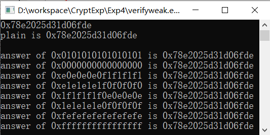
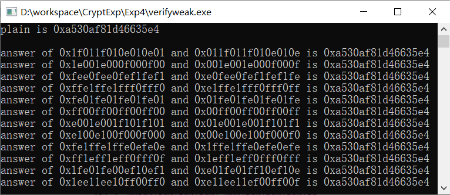
总结与思考
由于弱密钥、半弱密钥（或者稍强一些的possible weak key）生成的子密钥个数较少，他们的构造方式可以体现出明显的对称性，包括左半部分和右半部分的对称、半部分内部循环节的对称。假若初始密钥具有这种显著的对称特点，就很有可能成为弱密钥和半弱密钥，使得可以使用加密密钥的对称密钥来解密，降低了安全性。
由于弱密钥和半弱密钥的个数相对于密钥的总数较少，所以不会对DES算法的整体安全性造成格外重大的破坏。此外，如有需求，可以在生成密钥时对原始密钥进行检查，避免弱密钥或半弱密钥的使用。
四、DES算法的优化
思路
DES算法的结构固定，复杂度也固定，故而若想进行速度方面的优化，难以从减少复杂度方面下手——这样会使得安全性下降，算法原理也改变。所以我选择进行基于C语言的，对置换盒实现方法的优化。
C作为一门面向过程的语言，并不能像一些硬件语言一样真正实现并行计算，因此在给定置换盒后，一个k位的二进制数需要进行固定的k次处理来得到结果，所需时间相比于硬件的并行计算增大了k倍。由于次数和盒是给定的，那么速度的优化可以有以下两种方式：
- 在一次置换中，减少位代换的次数k，也就是同时处理一些位
- 减少置换的次数
其他的想法，诸如“同时处理一些置换”是难以实现的，因为DES是一种迭代算法，下一轮的计算依赖于前一轮的结果。而减少置换次数的实现方法，可以将非线性的S盒和线性的P盒合并为SP盒，至于其他的盒，其功能不同，实现的时机也不同，则难以进行这种优化。我在这次作业中尝试两种优化方法，也就是减少位代换的次数k、减少置换次数。
算法原理
减少位代换次数这一部分，我优化了初始置换IP、逆置换InvP、拓展置换EP、SP盒，这里以初始置换IP和拓展置换EP为例说明算法原理，InvP与IP置换原理类似，实现稍有不同。
至于密钥生成算法也可以通过类似的算法优化PC-1置换，但是由于对于每次加密，密钥只生成一次，所以没有必要。当然，若对加密算法进行改进，例如进行多重DES加密时，也可以做同样的处理。
而减少置换次数这一部分，是直接处理S盒，使得它成为SP的复合运算，我将更改的S盒在附录中给出。
初始置换
可以观察到初始置换 IP 盒的排列（如下）显然具有一些数字上的规律。它可以分成 8 组，一组 8 位，是初始值不同的步长为 8 的，对输入明文的一次遍历。若要减少遍历次数，可进行 8 次处理，一次提取 8 位（通过与MOD = 0x0101010101010101的与运算），再进行一次缩减运算后得到 8 位有效位的一组数字。
Pini[64] = {
58, 50, 42, 34, 26, 18, 10, 2,
60, 52, 44, 36, 28, 20, 12, 4,
62, 54, 46, 38, 30, 22, 14, 6,
64, 56, 48, 40, 32, 24, 16, 8,
57, 49, 41, 33, 25, 17, 9, 1,
59, 51, 43, 35, 27, 19, 11, 3,
61, 53, 45, 37, 29, 21, 13, 5,
63, 55, 47, 39, 31, 23, 15, 7}
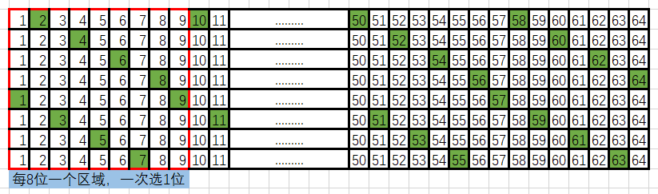
拓展置换
相较于初始置换，拓展置换的规律更加显著：每 6 位为一组，共分为 8 组（含重复）。算法实现时可设置步长为 6 的索引，一次处理 6 位，直接通过或运算即可得到拓展结果。
Kext[48] = {
32, 1, 2, 3, 4, 5,
4, 5, 6, 7, 8, 9,
8, 9, 10, 11, 12, 13,
12, 13, 14, 15, 16, 17,
16, 17, 18, 19, 20, 21,
20, 21, 22, 23, 24, 25,
24, 25, 26, 27, 28, 29,
28, 29, 30, 31, 32, 1 },
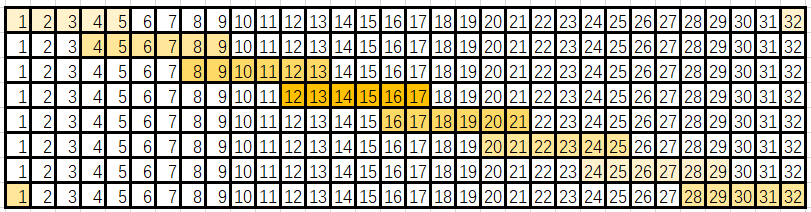
算法流程
函数调用图
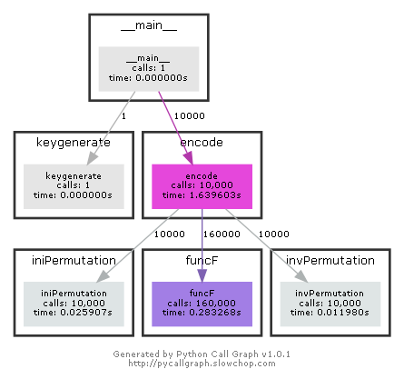
IP置换流程
我分别对初始置换IP、逆置换InvP和拓展置换进行处理，这里以初始置换为例说明算法流程，其余二者与IP置换原理类似，实现稍有不同。
未经优化的DES算法如下所示，我使用无符号长整型来表示输入的 64 位二进制数，经过 64 轮代换，得到置换后输出的结果。
unsigned long long iniPermutation(unsigned long long word){
unsigned long long ans = 0;
for (int i = 0; i < 64; i ++){
ans <<= 1;
ans |= (word >> (64 - Pini[i])) & 1;
}
return ans;
}
而基于初始置换 IP 盒排列的数字规律，可以建立一个索引表来表示初始值index[8] = [2, 4, 6, 8, 1, 3, 5, 7]。这个索引表可以用一个式子来表示cnt = 1; cnt=(cnt+2)%9，这就完成了对遍历的表示。
对于一次访问，得到8位数字，可用一次与运算完成。取MOD = 0x0101010101010101，(word>>(7-cnt)) & MOD完成一组数据的提取，但此时仍旧是 64 位，需要通过缩位运算来得到 8 位有效数字，我采用了 8 次与运算。综上有置换的更新算法：
unsigned long long iniPermutation(unsigned long long word){
unsigned long long ans = 0, k=0;
for (int i = 0, cnt = 1; i < 8; i ++, cnt=(cnt+2)%9){
k = (word>>(7-cnt)) & MOD;
ans <<= 8;
ans |= ((k&1)<<7)|((k&0x100)>>2)|((k&0x10000)>>11)|
((k&0x1000000)>>20)|((k&0x100000000)>>29)|
((k&0x10000000000)>>38)|
((k&0x1000000000000)>>47)|
((k&0x100000000000000)>>56);
}
return ans;
}
测试和环境
由于DES算法只对置换部分进行了优化，完全不改变测试数据和计算原理，所以测试数据不在这里再放一次了。本地速度更快一些，在300+Mb/s。用官方测试平台时，结果如下：相较于最初未优化的版本，运行时间缩短近6/7，速度在 220 Mb/s左右。其中各个部分的优化状况如下表所示，可以看到对F函数的优化效果最为显著，在拓展置换和SP盒优化两个阶段，总计减少约120ms。
| 优化方法 | 缩短时间（在上一步的基础上） | 缩短时间（在未优化的基础上） |
|---|---|---|
| IP/invIP | -30ms | -30ms |
| EP置换 | -70ms | -70ms |
| SP盒 | -50ms | -60ms |
| O3优化 | -20ms | -40ms |
测试环境：gcc版本6.4.0
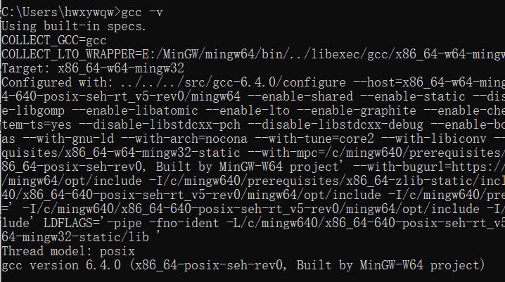
附录一：DES两问
目前对于DES的密码分析都做了哪些工作，有什么成果？
尽管在现代，DES已经不再被认为是可靠的加密方式，但其与其诸多变型和改进仍在被广泛使用，因此掌握DES的密码分析是必要的。当前攻击DES的方法主要有线性密码分析方法、差分密码分析方法等，还没有一种能将密码分析的复杂性降至穷尽搜索的一半以下的简捷方法。
线性密码分析由Matsui在1993年提出，属于一种已知明文攻击，某些情况下可用于唯密文攻击，基于找到DES中进行变换的线性近似。目前对线性密码分析的研究中较为重要的是计算攻击算法的成功率和复杂度。线性密码分析在提出后得到不断推广，例如“多重线性密码分析”、“非线性密码分析”等。
差分密码分析由Shamir等人在90年代初提出，是一种选择明文分析，可用来分析明文对中特殊差分对结果密文对中差分的影响。这些差分可用来将概率分配给可能的密钥，并用来给最可能的密钥定位。此法具通常只用结果密文对来处理许多具有同一特殊差分的明文对。差分密码分析也有推广的密码分析手段，诸如“截断差分密码分析”、“高阶差分密码分析”、“不可能差分密码分析”等。
DES为何不再适用于现代？
事实上，DES对于上述的差分密码分析和线性密码分析具有一定的抵抗力，但是对于强力攻击却不再足够安全——DES自提出，至今已过去数十年，在这期间经历了计算机算力的迅速增长，现如今已经能在较短时间内尝试$2^{56}$次计算。因此，在最初被认为足以抵挡计算机穷举攻击的56位密钥在现代已不再适用。
附录二：置换盒与代换盒
常规的盒
Pini[64] = {58, 50, 42, 34, 26, 18, 10, 2, 60, 52, 44, 36, 28, 20, 12, 4,
62, 54, 46, 38, 30, 22, 14, 6, 64, 56, 48, 40, 32, 24, 16, 8,
57, 49, 41, 33, 25, 17, 9, 1, 59, 51, 43, 35, 27, 19, 11, 3,
61, 53, 45, 37, 29, 21, 13, 5, 63, 55, 47, 39, 31, 23, 15, 7},
Pinv[64] = {40, 8, 48, 16, 56, 24, 64, 32, 39, 7, 47, 15, 55, 23, 63, 31,
38, 6, 46, 14, 54, 22, 62, 30, 37, 5, 45, 13, 53, 21, 61, 29,
36, 4, 44, 12, 52, 20, 60, 28, 35, 3, 43, 11, 51, 19, 59, 27,
34, 2, 42, 10, 50, 18, 58, 26, 33, 1, 41, 9, 49, 17, 57, 25},
Ksub1[56] ={57, 49, 41, 33, 25, 17, 9, 1, 58, 50, 42, 34, 26, 18,
10, 2, 59, 51, 43, 35, 27, 19, 11, 3, 60, 52, 44, 36,
63, 55, 47, 39, 31, 23, 15, 7, 62, 54, 46, 38, 30, 22,
14, 6, 61, 53, 45, 37, 29, 21, 13, 5, 28, 20, 12, 4},
Ksub2[48] ={14, 17, 11, 24, 1, 5, 3, 28, 15, 6, 21, 10,
23, 19, 12, 4, 26, 8, 16, 7, 27, 20, 13, 2,
41, 52, 31, 37, 47, 55, 30, 40, 51, 45, 33, 48,
44, 49, 39, 56, 34, 53, 46, 42, 50, 36, 29, 32},
Kext[48] = {32, 1, 2, 3, 4, 5, 4, 5, 6, 7, 8, 9,
8, 9, 10, 11, 12, 13, 12, 13, 14, 15, 16, 17,
16, 17, 18, 19, 20, 21, 20, 21, 22, 23, 24, 25,
24, 25, 26, 27, 28, 29, 28, 29, 30, 31, 32, 1 },
Kleft[16] = {1, 1, 2, 2, 2, 2, 2, 2, 1, 2, 2, 2, 2, 2, 2, 1},
Pbox[32] = {16, 7, 20, 21, 29, 12, 28, 17, 1, 15, 23, 26, 5, 18, 31, 10,
2, 8, 24, 14, 32, 27, 3, 9, 19, 13, 30, 6, 22, 11, 4, 25},
Sbox[8][64] ={{14, 4, 13, 1, 2, 15, 11, 8, 3, 10, 6, 12, 5, 9, 0, 7,
0, 15, 7, 4, 14, 2, 13, 1, 10, 6, 12, 11, 9, 5, 3, 8,
4, 1, 14, 8, 13, 6, 2, 11, 15, 12, 9, 7, 3, 10, 5, 0,
15, 12, 8, 2, 4, 9, 1, 7, 5, 11, 3, 14, 10, 0, 6, 13},
{15, 1, 8, 14, 6, 11, 3, 4, 9, 7, 2, 13, 12, 0, 5, 10,
3, 13, 4, 7, 15, 2, 8, 14, 12, 0, 1, 10, 6, 9, 11, 5,
0, 14, 7, 11, 10, 4, 13, 1, 5, 8, 12, 6, 9, 3, 2, 15,
13, 8, 10, 1, 3, 15, 4, 2, 11, 6, 7, 12, 0, 5, 14, 9},
{10, 0, 9, 14, 6, 3, 15, 5, 1, 13, 12, 7, 11, 4, 2, 8,
13, 7, 0, 9, 3, 4, 6, 10, 2, 8, 5, 14, 12, 11, 15, 1,
13, 6, 4, 9, 8, 15, 3, 0, 11, 1, 2, 12, 5, 10, 14, 7,
1, 10, 13, 0, 6, 9, 8, 7, 4, 15, 14, 3, 11, 5, 2, 12},
{7, 13, 14, 3, 0, 6, 9, 10, 1, 2, 8, 5, 11, 12, 4, 15,
13, 8, 11, 5, 6, 15, 0, 3, 4, 7, 2, 12, 1, 10, 14, 9,
10, 6, 9, 0, 12, 11, 7, 13, 15, 1, 3, 14, 5, 2, 8, 4,
3, 15, 0, 6, 10, 1, 13, 8, 9, 4, 5, 11, 12, 7, 2, 14},
{2, 12, 4, 1, 7, 10, 11, 6, 8, 5, 3, 15, 13, 0, 14, 9,
14, 11, 2, 12, 4, 7, 13, 1, 5, 0, 15, 10, 3, 9, 8, 6,
4, 2, 1, 11, 10, 13, 7, 8, 15, 9, 12, 5, 6, 3, 0, 14,
11, 8, 12, 7, 1, 14, 2, 13, 6, 15, 0, 9, 10, 4, 5, 3},
{12, 1, 10, 15, 9, 2, 6, 8, 0, 13, 3, 4, 14, 7, 5, 11,
10, 15, 4, 2, 7, 12, 9, 5, 6, 1, 13, 14, 0, 11, 3, 8,
9, 14, 15, 5, 2, 8, 12, 3, 7, 0, 4, 10, 1, 13, 11, 6,
4, 3, 2, 12, 9, 5, 15, 10, 11, 14, 1, 7, 6, 0, 8, 13},
{4, 11, 2, 14, 15, 0, 8, 13, 3, 12, 9, 7, 5, 10, 6, 1,
13, 0, 11, 7, 4, 9, 1, 10, 14, 3, 5, 12, 2, 15, 8, 6,
1, 4, 11, 13, 12, 3, 7, 14, 10, 15, 6, 8, 0, 5, 9, 2,
6, 11, 13, 8, 1, 4, 10, 7, 9, 5, 0, 15, 14, 2, 3, 12},
{13, 2, 8, 4, 6, 15, 11, 1, 10, 9, 3, 14, 5, 0, 12, 7,
1, 15, 13, 8, 10, 3, 7, 4, 12, 5, 6, 11, 0, 14, 9, 2,
7, 11, 4, 1, 9, 12, 14, 2, 0, 6, 10, 13, 15, 3, 5, 8,
2, 1, 14, 7, 4, 10, 8, 13, 15, 12, 9, 0, 3, 5, 6, 11}};
优化的SP盒
0x00808200, 0x00008000, 0x00808002, 0x00000002, 0x00000200, 0x00808202, 0x00800202, 0x00800000,
0x00000202, 0x00800200, 0x00008200, 0x00808000, 0x00008002, 0x00800002, 0x00000000, 0x00008202,
0x00000000, 0x00808202, 0x00008202, 0x00008000, 0x00808200, 0x00000200, 0x00808002, 0x00000002,
0x00800200, 0x00008200, 0x00808000, 0x00800202, 0x00800002, 0x00008002, 0x00000202, 0x00800000,
0x00008000, 0x00000002, 0x00808200, 0x00800000, 0x00808002, 0x00008200, 0x00000200, 0x00800202,
0x00808202, 0x00808000, 0x00800002, 0x00008202, 0x00000202, 0x00800200, 0x00008002, 0x00000000,
0x00808202, 0x00808000, 0x00800000, 0x00000200, 0x00008000, 0x00800002, 0x00000002, 0x00008202,
0x00008002, 0x00800202, 0x00000202, 0x00808200, 0x00800200, 0x00000000, 0x00008200, 0x00808002,
0x40084010, 0x00004000, 0x00080000, 0x40080010, 0x40000010, 0x40084000, 0x40004000, 0x00000010,
0x00084000, 0x40004010, 0x40000000, 0x00084010, 0x00080010, 0x00000000, 0x00004010, 0x40080000,
0x40004000, 0x00084010, 0x00000010, 0x40004010, 0x40084010, 0x40000000, 0x00080000, 0x40080010,
0x00080010, 0x00000000, 0x00004000, 0x40080000, 0x40000010, 0x00084000, 0x40084000, 0x00004010,
0x00000000, 0x40080010, 0x40004010, 0x40084000, 0x40080000, 0x00000010, 0x00084010, 0x00004000,
0x00004010, 0x00080000, 0x00080010, 0x40000010, 0x00084000, 0x40004000, 0x40000000, 0x40084010,
0x00084010, 0x00080000, 0x40080000, 0x00004000, 0x40004000, 0x40084010, 0x00000010, 0x40000000,
0x40084000, 0x40000010, 0x40004010, 0x00080010, 0x00000000, 0x00004010, 0x40080010, 0x00084000,
0x00000104, 0x00000000, 0x04000100, 0x00010104, 0x00010004, 0x04000004, 0x04010104, 0x04010000,
0x04000000, 0x04010100, 0x00010100, 0x04010004, 0x04000104, 0x00010000, 0x00000004, 0x00000100,
0x04010100, 0x04010004, 0x00000000, 0x04000100, 0x04000004, 0x00010000, 0x00010004, 0x00000104,
0x00000004, 0x00000100, 0x04010000, 0x00010104, 0x00010100, 0x04000104, 0x04010104, 0x04000000,
0x04010100, 0x00010004, 0x00010000, 0x04000100, 0x00000100, 0x04010104, 0x04000004, 0x00000000,
0x04000104, 0x04000000, 0x00000004, 0x00010100, 0x04010000, 0x00000104, 0x00010104, 0x04010004,
0x04000000, 0x00000104, 0x04010100, 0x00000000, 0x00010004, 0x04000100, 0x00000100, 0x04010004,
0x00010000, 0x04010104, 0x00010104, 0x04000004, 0x04000104, 0x04010000, 0x00000004, 0x00010100,
0x80401000, 0x80001040, 0x00401040, 0x80400000, 0x00000000, 0x00401000, 0x80000040, 0x00400040,
0x80000000, 0x00400000, 0x00000040, 0x80001000, 0x80400040, 0x00001040, 0x00001000, 0x80401040,
0x80001040, 0x00000040, 0x80400040, 0x80001000, 0x00401000, 0x80401040, 0x00000000, 0x80400000,
0x00001000, 0x80401000, 0x00400000, 0x00001040, 0x80000000, 0x00400040, 0x00401040, 0x80000040,
0x00400040, 0x00401000, 0x80000040, 0x00000000, 0x00001040, 0x80400040, 0x80401000, 0x80001040,
0x80401040, 0x80000000, 0x80400000, 0x00401040, 0x80001000, 0x00400000, 0x00000040, 0x00001000,
0x80400000, 0x80401040, 0x00000000, 0x00401000, 0x00400040, 0x80000000, 0x80001040, 0x00000040,
0x80000040, 0x00001000, 0x80001000, 0x80400040, 0x00001040, 0x80401000, 0x00400000, 0x00401040,
0x00000080, 0x01040000, 0x00040000, 0x20000000, 0x20040080, 0x01000080, 0x21000080, 0x00040080,
0x01000000, 0x20040000, 0x20000080, 0x21040080, 0x21040000, 0x00000000, 0x01040080, 0x21000000,
0x01040080, 0x21000080, 0x00000080, 0x01040000, 0x00040000, 0x20040080, 0x21040000, 0x20000000,
0x20040000, 0x00000000, 0x21040080, 0x01000080, 0x20000080, 0x21000000, 0x01000000, 0x00040080,
0x00040000, 0x00000080, 0x20000000, 0x21000080, 0x01000080, 0x21040000, 0x20040080, 0x01000000,
0x21040080, 0x21000000, 0x01040000, 0x20040000, 0x00040080, 0x20000080, 0x00000000, 0x01040080,
0x21000080, 0x01000000, 0x01040000, 0x20040080, 0x20000000, 0x01040080, 0x00000080, 0x21040000,
0x00040080, 0x21040080, 0x00000000, 0x21000000, 0x01000080, 0x00040000, 0x20040000, 0x20000080,
0x10000008, 0x00002000, 0x10200000, 0x10202008, 0x10002000, 0x00200000, 0x00200008, 0x10000000,
0x00000000, 0x10002008, 0x00202000, 0x00000008, 0x10200008, 0x00202008, 0x00002008, 0x10202000,
0x10200000, 0x10202008, 0x00000008, 0x00200000, 0x00202008, 0x10000008, 0x10002000, 0x00002008,
0x00200008, 0x00002000, 0x10002008, 0x10200008, 0x00000000, 0x10202000, 0x00202000, 0x10000000,
0x10002000, 0x10200008, 0x10202008, 0x00002008, 0x00200000, 0x10000000, 0x10000008, 0x00202000,
0x00202008, 0x00000000, 0x00000008, 0x10200000, 0x00002000, 0x10002008, 0x10202000, 0x00200008,
0x00000008, 0x00202000, 0x00200000, 0x10000008, 0x10002000, 0x00002008, 0x10202008, 0x10200000,
0x10202000, 0x10200008, 0x00002000, 0x00202008, 0x00200008, 0x00000000, 0x10000000, 0x10002008,
0x00100000, 0x02000401, 0x00000400, 0x00100401, 0x02100401, 0x00000000, 0x00000001, 0x02100001,
0x02000400, 0x00100001, 0x02000001, 0x02100400, 0x02100000, 0x00000401, 0x00100400, 0x02000000,
0x02100001, 0x00000000, 0x02000401, 0x02100400, 0x00100000, 0x02000001, 0x02000000, 0x00000401,
0x00100401, 0x02000400, 0x02100000, 0x00100001, 0x00000400, 0x02100401, 0x00000001, 0x00100400,
0x02000000, 0x00100000, 0x02000401, 0x02100001, 0x00100001, 0x02000400, 0x02100400, 0x00100401,
0x00000401, 0x02100401, 0x00100400, 0x00000001, 0x00000000, 0x02100000, 0x02000001, 0x00000400,
0x00100400, 0x02000401, 0x02100001, 0x00000001, 0x02000000, 0x00100000, 0x00000401, 0x02100400,
0x02000001, 0x02100000, 0x00000000, 0x02100401, 0x00100401, 0x00000400, 0x02000400, 0x00100001,
0x08000820, 0x00020000, 0x08000000, 0x00000020, 0x00020020, 0x08020820, 0x08020800, 0x00000800,
0x08020000, 0x08000800, 0x00020800, 0x08020020, 0x00000820, 0x00000000, 0x08000020, 0x00020820,
0x00000800, 0x08020820, 0x08000820, 0x08000000, 0x08020000, 0x00020800, 0x00020820, 0x00000020,
0x08000020, 0x00000820, 0x00020020, 0x08020800, 0x00000000, 0x08020020, 0x08000800, 0x00020000,
0x00020820, 0x08020800, 0x00000020, 0x00000800, 0x08000800, 0x08000020, 0x08020020, 0x00020000,
0x00000000, 0x00020020, 0x08020000, 0x08000820, 0x08020820, 0x00020800, 0x00000820, 0x08000000,
0x00020000, 0x00000800, 0x08020020, 0x00020820, 0x00000020, 0x08020000, 0x08000000, 0x08000820,
0x08020820, 0x08000020, 0x08000800, 0x00000000, 0x00020800, 0x00000820, 0x00020020, 0x08020800,
附录三：代码
给出两个版本（仅仅给出加密算法，解密算法自行变化可得）
未优化版
加密速度在40Mb/s左右，封装较好，可读性好
#include <stdio.h>
#include <string.h>
#include <ctype.h>
#include <stdlib.h>
#include <math.h>
unsigned long long roundkey[16] = {0};
unsigned long long iniPermutation(unsigned long long word){
unsigned long long ans = 0;
for (int i = 0; i < 64; i ++){
ans <<= 1;
ans |= (word >> (64 - Pini[i])) & 1;
}
return ans;
}
unsigned long long invPermutation(unsigned long long word){
unsigned long long ans = 0;
for (int i = 0; i < 64; i ++){
ans <<= 1;
ans |= (word >> (64 - Pinv[i])) & 1;
}
return ans;
}
unsigned long long funcF(unsigned long long r, unsigned long long key){
unsigned long long result = 0;
// 扩展置换
for (int i = 0; i < 48; i ++){
result <<= 1;
result |= (r >> (32 - Kext[i])) & 1;
}
// 轮密钥加
result ^= key;
// S盒: 非线性代换
unsigned long long tmp = 0;
for (int i = 7; i >= 0; i --){
int add = ((result >> (6*i + 4)) & 2) | ((result >> (6*i)) & 1);
int num = (result >> (6*i + 1)) & ((1 << 4) - 1);
tmp |= (unsigned long long)(Sbox[7-i][((add) << 4) + num]) << (4*i);
}
// P盒: 线性置换
result = 0;
for (int i = 0; i < 32; i ++){
result <<= 1;
result |= (tmp >> (32 - Pbox[i])) & 1;
}
return result;
}
unsigned long long encode(unsigned long long word, unsigned long long key){
unsigned long long ans, left, right, tmp;
word = iniPermutation(word);
left = word >> 32;
right = word & (((unsigned long long)1 << 32) - 1);
for (int t = 0; t < 16; t ++){
tmp = left;
left = right;
right = tmp ^ funcF(right, roundkey[t]);
}
word = (right << 32) | left;
ans = invPermutation(word);
return ans;
}
void keygenerate(unsigned long long key){
unsigned long long C=0, D=0, tmp=0, ans=0;
// 删去8位奇偶校验位，K'=[C0,D0]
for (int i = 0; i < 56; i ++){
tmp <<= 1;
tmp |= (key >> (64 - Ksub1[i])) & 1;
}
C = tmp >> 28;
D = tmp & ((1 << 28) - 1);
// 循环左移，生成16轮子密钥
for (int i = 0; i < 16; i ++){
C = (C >> (28 - Kleft[i])) + ((C & ((1 << (28 - Kleft[i])) -1)) << Kleft[i]);
D = (D >> (28 - Kleft[i])) + ((D & ((1 << (28 - Kleft[i])) -1)) << Kleft[i]);
tmp = (C << 28) | D;
ans = 0;
for (int j = 0; j < 48; j ++){
ans <<= 1;
ans |= (tmp >> (56 - Ksub2[j])) & 1;
}
roundkey[i] = ans;
}
}
int main(){
// freopen("in.txt","r",stdin);
int n, kind;
unsigned long long str, key, ans;
scanf("%d %llx %llx %d", &n, &str, &key, &kind);
keygenerate(key);
if (kind)
for (int i = 0; i < n; i ++)
str = encode(str, key);
else
for (int i = 0; i < n; i ++)
str = decode(str, key);
printf("0x%016llx", str);
return 0;
}
优化版
加密速度在250Mb/s左右，使用了SP盒
#include <stdio.h>
#include <stdlib.h>
#pragma GCC optimize("O3")
#define MOD 0x0101010101010101
unsigned long long roundkey[16] = {0};
int main(){
// freopen("in.txt","r",stdin);
int n, i, j, p, t, cnt;
unsigned long long k, key, ans, tmp, word, left, right;
scanf("%d %llx %llx", &n, &word, &key);
// 密钥生成
// 删去8位奇偶校验位，K'=[C0,D0]
for (i = 0, tmp = 0; i < 56; i ++){
tmp <<= 1;
tmp |= (key >> (64 - Ksub1[i])) & 1;
}
left = tmp >> 28;
right= tmp & 0xFFFFFFF;
// 循环左移，生成16轮子密钥
for (i = 0, ans = 0; i < 16; i ++){
left = (left >> (28 - Kleft[i])) + ((left & ((1 << (28 - Kleft[i])) -1)) << Kleft[i]);
right = (right >> (28 - Kleft[i])) + ((right & ((1 << (28 - Kleft[i])) -1)) << Kleft[i]);
tmp = (left << 28) | right;
ans = 0;
for (j = 0; j < 48; j ++){
ans <<= 1;
ans |= (tmp >> (56 - Ksub2[j])) & 1;
}
roundkey[i] = ans;
}
// 加密
for (p = 0; p < n; p ++){
// IP
for (i = 0, cnt = 1, ans = 0; i < 8; i ++, cnt=(cnt+2)%9){
k = (word>>(7-cnt)) & MOD;
ans <<= 8;
ans |= ((k&1)<<7)|((k&0x100)>>2)|((k&0x10000)>>11)|((k&0x1000000)>>20)|((k&0x100000000)>>29)|
((k&0x10000000000)>>38)|((k&0x1000000000000)>>47)|((k&0x100000000000000)>>56);
}
// ENCODE
left = ans >> 32;
right = ans & 0xFFFFFFFF;
for (t = 0; t < 15; t ++){
tmp = left;
left = right;
// funF
k = roundkey[t]^((left&1)<<47)^((left&0xF8000000)<<15)^((left&0x1F800000)<<13)^
((left&0x1F80000)<<11)^((left&0x1F8000)<<9)^((left&0x1F800)<<7)^
((left&0x1F80)<<5)^((left&0x1F8)<<3)^((left&0x1F)<<1)^((left&0x80000000)>>31);
for (i = 7, right = tmp; i >= 0; i --)
right ^= Sbox[7-i][((((k >> ((6*i)+4)) & 2) | ((k >> (6*i)) & 1)) << 4) + ((k >> (6*i+1)) & 0xF)];
}
// funF
k = roundkey[t]^((right&1)<<47)^((right&0xF8000000)<<15)^((right&0x1F800000)<<13)^
((right&0x1F80000)<<11)^((right&0x1F8000)<<9)^((right&0x1F800)<<7)^
((right&0x1F80)<<5)^((right&0x1F8)<<3)^((right&0x1F)<<1)^((right&0x80000000)>>31);
for (i = 7; i >= 0; i --)
left ^= Sbox[7-i][((((k >> ((6*i)+4)) & 2) | ((k >> (6*i)) & 1)) << 4) + ((k >> (6*i+1)) & 0xF)];
ans = (left << 32) | right;
// invIP
for (i = 0, cnt = 0, word = 0; i < 8; i ++, cnt ++){
k = (ans>>cnt) & MOD;
word <<= 8;
word |= ((k&1)<<1)|((k&0x100)>>5)|((k&0x10000)>>11)|((k&0x1000000)>>17)|((k&0x100000000)>>32)|
((k&0x10000000000)>>38)|((k&0x1000000000000)>>44)|((k&0x100000000000000)>>50);
}
}
printf("0x%016llx", word);
return 0;
}